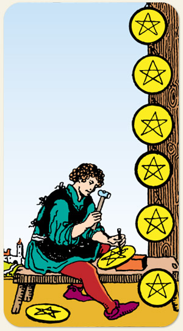

A dedicação ao ofício, o aprimoramento técnico e a repetição produtiva. O estágio de especialização onde o foco é direcionado para a qualidade e a precisão do trabalho, a maestria como fruto da persistência e da atenção aos detalhes. O aprendiz aplicado, a rotina construtiva, a ética profissional e o desenvolvimento de talentos que trarão recompensas sólidas no futuro.
Produtividade mais Fertilidade. É a produtividade do trabalho, a produção de riqueza, alcançar a perfeição, produzir coisas personalizadas e de alta qualidade.
Positivo: Bons resultados nos empreendimentos, dinheiro rendendo, lucro, prosperidade, clientes chegando, promoções no trabalho, melhora na saúde, viver uma vida com mais recursos. Pode não ser uma riqueza opulenta, mas já é mais do que os boletos em dia.
Negativo: Um trabalho árduo com pouco retorno, receber demanda de trabalho e não dar conta, não conseguir manter a qualidade do trabalho, investir e não ver retorno, estar atrasado nos processos.
Símbolos: Homem, Artesão, Ferramenta de Entalhe, Tijolo, Banco de Madeira, Árvore, Caminho, Castelo ao Fundo.
Cores: Amarelo, Azul, Vermelho, Cinza.